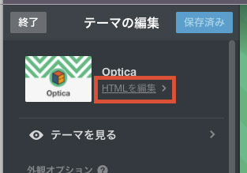

はじめよう
進捗バー
このページでは Tokusetsu 3 をはじめて使う方へ、設定方法を解説します。
1. インストールする
事前にtumblr のユーザー登録を行なってください。
- Tokusetsu 3 を適用するためのブログを新規作成します。
- テーマのhtmlファイル (index.html)をコピーします。（※そのページの右上あたりに「Raw」ボタンがあるのでそこをクリックするとコピーしやすい）
- Tumblr のテーマカスタマイズ画面を開いて、「HTMLを編集」を押します。
- 
- もとの html を削除して
index.htmlの中身を貼り付けて保存します。
2. スマホで表示できるようにする
設定忘れに注意！ この設定を忘れるとスマートフォンから表示できなくなるので、必ず確認しましょう。
- Tumblr のテーマカスタマイズ画面を開いて 「▾ 詳細設定」の「デフォルトのモバイルテーマを使用」の チェックをオフにする
- このチェックが外れていないとスマートフォンから表示できなくなるので必ずオフにしてください。
- 同様に「Tumblrを広める」「Google AMPを有効にする」のチェックもオフに
- その他「詳細設定」内の項目はすべてオフでOKです。
3. カスタマイズする
テンプレートの機能を使い、ページを仕上げていきます。
3-1: カスタマイズの設定をする
- Tumblr のテーマカスタマイズ画面で、各項目を設定します。
- 各項目については次ページ「各項目のカスタマイズ」で詳しく解説します。
- 必要な項目を埋めたら完成です。
3-2: サイトを公開する
- Tumblr のテーマカスタマイズ画面の「保存」をクリックして公開します。
- 公開前に確認することは「いよいよ公開、その前に」ページにまとめましたので、必ず目を通してください。
次ページで「各項目のカスタマイズ」を詳しく解説します。
次のページへすすむ